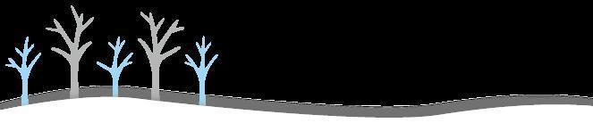
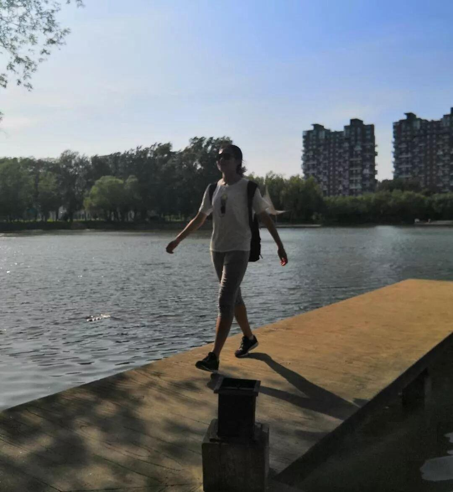
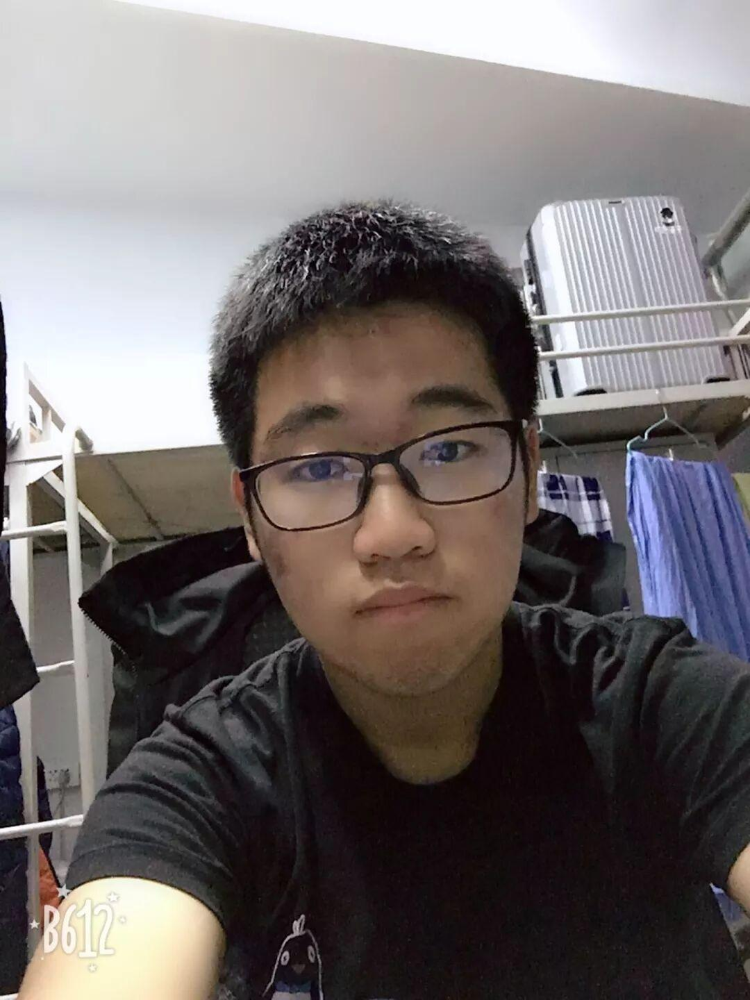
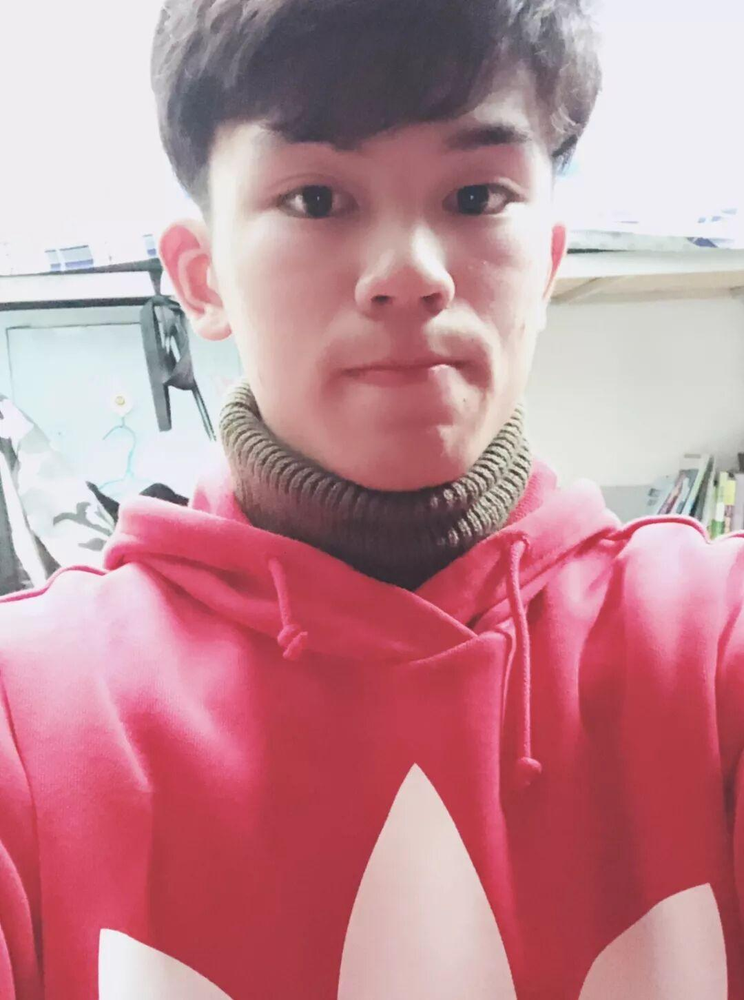
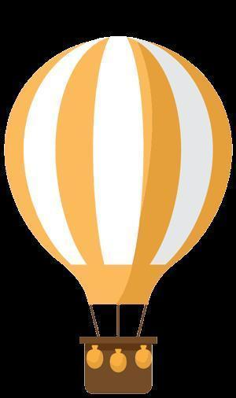

办公室——电协的心脏
电协
办公室
电子技术与应用协会发展至今，已经拥有了近七百位协会成员。在它之下的每一个部门，都又作为电协的分枝，支撑着电协的正常运转。而有这样一个部门，它作为电协的枢纽，默默的为大家付出，它就是办公室部门。

1、通知的上下传达
2、各部门之间的沟通和联系
3、活动的总体架构的构建和策划
4、日常与社联沟通并进行日常活动交表审批、竞赛期间沟通老师及组委会，及时获取最新动态并进行相应安排。
办公室人员介绍
蔡毓鑫，机械设计制造及其自动化，中俄学院，来自福建泉州。为人性格开朗，喜欢结交朋友。
个人简介
赵泉旭，17级电子信息工程专业，来自辽宁省丹东市。热爱运动，喜欢打乒乓球、玩魔方、阅读书籍，并从中不断的积累新知识，陶冶情操，开拓视野。为人热情开朗，踏实做事，诚实做人，善于沟通，勇于创新，性格稳重，能吃苦耐劳，有较强的组织能力和实际动手能力。

大家好，我是林佳慧，是办公室成员之一。我喜欢多种运动，喜欢室外清新的空气。作为一名大学生，我觉得坚持最重要，希望大家越来越出类拔萃。
大家好，我是赵缘媛。来自经济管理学院，现在是电协办公室的一名干事。




2018-12-05
大家好，我叫陈泽天，我是来自自动化与电气工程学院电子科学与技术专业。我的家乡是浙江舟山（浙江电科独苗）。我平常喜欢打乒乓球、篮球。当然，作为一名学生，我热爱学习（热爱学习，热爱学习，重要的事情说三遍），在数学和物理方面尤其擅长，你们不会的问题可以来找我探讨哦。最后，作为一名电协的新干事，我一定会努力提升自己，度过充实的大学生活
我叫王耀，是来自内蒙的小伙，是一名办公室成员，机械制造及其自动化专业。喜欢在草原上骑马驰骋，喜欢无拘无束的生活。很高兴成为电协的一员，遇到你们，使我们彼此的幸运。
大家好，我是李沁宇，办公室的一名新干事。我的家乡在山西。我平时比较安静，也愿意去研究电子技术一类的东西。很高兴来到电协这个大家庭，希望能和大家愉快的相处。


大家好，我来自信息科学与工程学院物联网专业，我叫聂浩翔， 初次来到一个对自己或多或少有点陌生的城市和校园，对新环境的不适和陌生感也肯定是或多或少都会有的，我真诚地希望与每一个人做好朋友，共同渡过这个适应阶段，共同渡过这美好的四年时光！我坚信“十年磨砺锋利出，宝剑只待君来识”。再苦再累，我都愿意一试，“吃得苦中苦，方为人上人”，在以后的学习生活中，我一定会是一位尽自己的努力、过一个充实而又意义的大学生活。
大家好，我是黄继文，一个无法适应东北菜的江西小哥哥，来到电协最初的想法就是提升自己。我在不熟悉的人面前话比较少，但熟悉了之后还是挺好的。在这个社团，我们互相加油，一起进步。最后，希望以后大家多多关照。
编辑：苏闯
识别二维码，关注我们
